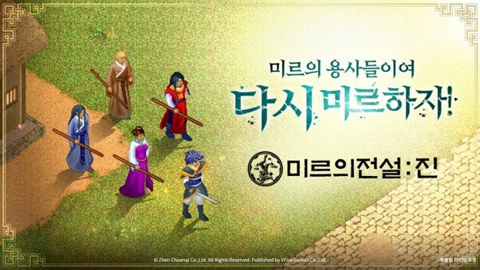
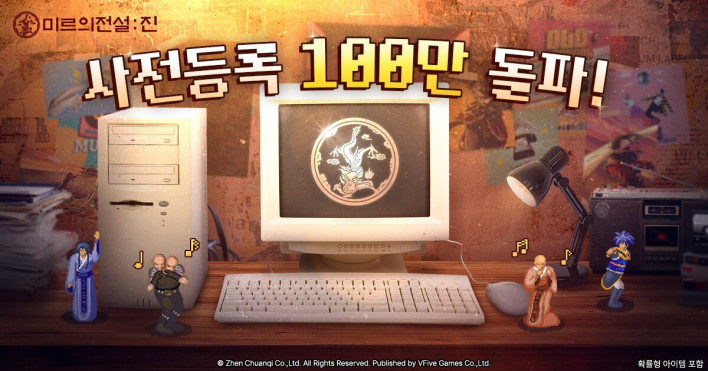

신작모바일게임추천 미르의전설:진 직업추천 초반가이드 출시직후정보 총정리
신작 모바일 MMO 기다리시는 분들, 미르의전설:진이 드디어 어제 나왔어요. 사전등록만 100만 명 넘게 몰렸던 게임이라 관심은 알고 있었는데, 막상 출시되고 나니 뭐부터 해야 하는지 감이 안 오시는 분들이 많을 것 같더라고요. 오늘은 출시 첫날 기준으로 직업별 특성 정리와 초반에 챙겨두면 좋은 것들을 풀어볼게요.

미르의 용사들이여, 다시 미르하자! 도트 감성 그대로예요
이미지: 인벤글로벌 · 네이버 본문엔 받아서 재업로드 권장
미르의전설:진이 어떤 게임이에요?
1998년에 나왔던 원작 '미르의 전설1'을 기억하시는 분들이라면 이름만 봐도 뭔가 설레지 않으셨나요. 미르의전설:진은 그 미르1 IP를 계승한 도트 픽셀 아트 무협 모바일 MMORPG입니다. 퍼블리싱은 브이파이브 게임즈(VFive Games), IP는 액토즈소프트가 보유하고 있어요. 혹시 헷갈리실 분들을 위해 한 줄만 짚자면, 위메이드의 미르4나 미르M과는 별개의 계보예요. 같은 '미르' 이름이지만 원작 1편 IP는 액토즈소프트 쪽이랍니다.
게임 자체는 도트 감성을 현대 모바일 환경으로 옮겨온 MMO인데요, 크게 세 가지 시스템이 눈에 띄더라고요. 우선 자유 PK 시스템이 있어서 필드에서 다른 유저를 공격할 수 있고, 과도하게 하면 패널티가 붙는 구조예요. 그다음으로 경매장 기반의 유저 경제인데, 유저끼리 1:1 자유 거래가 가능하고 아이템 가격이 수요공급으로 형성됩니다. 마지막으로 문파 간 대규모 공성전이 엔드게임 콘텐츠로 있어요. 수백 명이 참여하는 규모라고 하니 나중에 기대해볼 만한 것 같아요.
직업 6개, 뭘 골라야 해요?
미르의전설:진은 3계열 × 2세부 직업, 총 6개로 구성돼 있는데요. 각 계열별로 간단하게 정리해드릴게요.
| 계열 | 직업명 | 스타일 | 뉴비 난이도(초기 추정) |
|---|---|---|---|
| 전사 | 양전사 / 음전사 | 근거리 물리, 높은 HP | 쉬움 |
| 술사 | 화술사 / 천술사 | 원거리 마법, 광역 딜러 | 보통 |
| 도사 | 지도사 / 수도사 | 지원·버프·힐 가능 | 어려움(솔로) |
이 화면에서 직업을 고르면 돼요. 첫 선택이라 고민되죠!
전사 계열(양전사·음전사)은 뉴비한테 제일 무난한 선택이에요. 근거리 물리 딜러에 HP가 두툼하게 잡혀 있어서 처음 시작하는 분들이 적응하기 좋죠. 술사 계열(화술사·천술사)은 원거리 마법 딜러로, 광역 공격이 강한 대신 HP가 낮은 편이라 게임에 익숙해진 뒤 도전하면 재밌을 것 같아요. 도사 계열(지도사·수도사)은 버프와 힐이 가능한 지원형이라 파티에서 빛나는 직업이긴 한데, 솔로 사냥 난이도가 있어서 MMO 경험이 좀 있는 분들한테 어울릴 것 같더라고요.
한 가지 알아두실 게 있는데요, 어제 막 출시된 게임이라 계열별 상세 스킬 비교나 세부 티어표는 아직 정리된 공략이 없어요. 같은 계열 안에서 양전사·음전사가 어떻게 다른지, 화술사·천술사가 어떻게 구분되는지는 며칠 뒤 커뮤니티 공략이 쌓이면 더 잘 알 수 있을 것 같아요. 지금은 계열 특성 보고 취향대로 골라보시면 되겠습니다.
초반에 챙겨두면 좋은 것들
일단 게임 시작하면 사전등록 보상부터 챙기시는 것이 좋아요. '미르선구자' 칭호, 다이아, 금전 회수 보너스 카드 총 3가지를 받을 수 있는데요. 100만 명이 사전등록했다는 게 사실로 확인된 만큼(공식 발표 기준, 5월 14일부터 2주 만에 돌파했어요) 보상도 꽤 실속 있게 잡혔더라고요.
초반 성장 루트는 퀘스트 쭉 진행하면서 레벨에 맞는 필드 사냥을 병행하는 방식이에요. MMO 특성상 어느 정도 레벨이 오르면 경매장을 통해 장비를 거래하거나 강화하는 흐름인데요, 초반 재화(다이아·금전)는 서버 초기라 시세가 불안정하니 함부로 쓰지 않는 것이 좋아요. 나중에 진짜 필요한 데 쓸 수 있게 좀 쌓아두는 편을 추천드리는데요.
그리고 이게 자유 PK 게임이라는 점 꼭 기억해 두세요. 필드에서 고레벨 유저한테 선공 당하는 경우가 초반엔 있을 수 있거든요. 패널티 시스템이 있다고는 해도 처음 시작하는 분들한테는 좀 당황스러울 수 있으니 사냥터 선택 주의하시면 되겠습니다.
이벤트·보상은 이렇게

사전등록 100만 돌파! 저 레트로 PC 배경이 미르1 시절 PC방 느낌 물씬 나더라고요 ㅎㅎ
이미지: 인벤글로벌 · 네이버 본문엔 받아서 재업로드 권장
출시 기념으로 VFG 플랫폼에서 충전하면 추가 보상과 페이백 혜택이 있어요. 사전 이벤트로 진행됐던 SNS 공유 이벤트와 추억의 묵찌빠 이벤트(다이아·원기회복약·마력회생약)도 있었는데, 이건 사전예약 기간 동안 진행된 한시 이벤트라 지금은 종료된 내용이에요.
쿠폰 코드는 현재 공식 채널에서 공개된 코드를 확인하지 못했어요. 모바일 MMO 출시 초반엔 공식 라운지나 카페에 코드가 올라오는 경우가 있으니, 네이버 공식 라운지(game.naver.com/lounge/mirjin)에서 최신 공지 확인해 보시길 추천드려요.
이 도트 그래픽, 요즘 나온 게임 맞나 싶을 정도로 레트로 감성이 살아있어요
미르의전설:진 정리
미르의전설:진은 2026년 6월 4일 정식 출시된 도트 무협 모바일 MMORPG예요. 퍼블리셔 브이파이브 게임즈, 액토즈소프트 IP. 위메이드 미르4와는 다른 계보의 미르1 직계 계승작이고요. 직업은 전사(양전사·음전사)·술사(화술사·천술사)·도사(지도사·수도사) 총 6가지. 뉴비 첫 시작이라면 전사 계열이 무난하고, 초반엔 사전등록 보상 챙기고 재화 아끼면서 퀘스트·필드 사냥으로 쭉 올려보시는 것이 좋아요. 자유 PK 환경인 만큼 사냥터 조심하시고요. 출시 초기라 공략이 쌓여가는 중이니, 접속하면서 공식 라운지나 커뮤니티에서 정보 같이 챙겨보시면 좋겠습니다.
미르1 향수가 있으시거나 도트 감성 MMO가 취향이신 분들이라면 한 번 받아보시면 좋을 것 같아요. 저도 좀 더 해보고 업데이트 소식 나오면 또 들고 올게요!